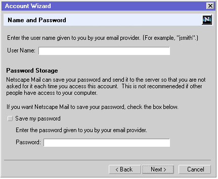
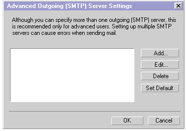

{kind=link}

|
Sea-Monkey: Messenger: Account Setup |
UI Specification |
|
Account Setup |
Last Modification: |
|
Author: Jennifer Glick |
Status: UE4 - The spec is implementable. Narrowed down to one design solution, major issues are resolved. Mail Import Tools portion is still a draft. |
||||||||||||||||
|
Quicklinks: Master Mail UE Spec |
Feature Team
|
||||||||||||||||
This spec covers the Account Setup Wizard, Account Settings Dialogs and the Mail Import Tools.
The Account Setup Wizard is used to set up new mail accounts (accounts that Netscape Mail did not find either through the 4.x upgrade or inside of 3rd party email applications). It can be run at anytime the user would like to set up a new mail or news account. It is run automatically at startup of Netscape Mail IF no 4.x profile or 3rd party mail applications were found.
The Account Settings Dialogs allow users to manage the detailed settings of their various Mail, and News accounts. The Account Settings Dialogs are a separate set of dialogs from the Preferences dialogs (change from 4.x).
The Mail Import Tools can be used to import settings, email messages and/or address book entries from 3rd party Mail Applications. They can be run by using the "File", "Import..." menu from within Netscape Mail or the Address Book. The user is given the option to run the Mail Import Tools Wizard at startup of Netscape Mail IF 3rd party mail applications were found.
Downloading 5.x Overview
*The items in Bold above are illustrated in the following flowchart: Flowchart of Process*
The Account Settings Dialogs (within Preferences) and New Account Wizard should allow a user to easily setup and/or modify account information for one or more Mail, or News accounts.
Basic
Intermediate
Advanced
- Use the Account Setup Wizard to import settings, email addresses and messages from a 3rd party email application.
- Use the Account Setup Wizard to create a new default Mail Account.
- User the Account Setup Wizard to create additional Mail Accounts.
- Use the Account Setup Wizard to create News accounts.
- Use the Account Settings Dialogs (within Preferences) to modify the settings and/or preferences for an existing Mail or News account.
- Use the Account Settings Dialogs (within Preferences) to modify their SMTP server.
- Use the Account Settings Dialogs (within Preferences) to add additional SMTP servers.
- Use the Account Settings Dialogs (within Preferences) to associate SMTP servers with specified Identities.
- Define Advanced IMAP server settings.
The Mail Import Tools.
Basic
Intermediate
Advanced
- Use the Mail Import Tool. Wizard to import their settings /mail /addresses from 3rd party Mail Applications.
The Account Setup Wizard should be straight forward and easy to use for novice users. It should easily and quickly walk them through the necessary steps to setting up a Mail, Netscape or News account. Only Required information is collected here and basic defaults for account behavior are chosen for the user.The Account Settings Dialogs (within Preferences) are aimed at more intermediate and advanced users who want to customize their accounts, change the default settings, add additional SMTP servers or associate certain Identities and SMTP servers.
The Mail Import Tools are aimed at more intermediate and advanced users who want to import settings, mail messages and/or address book entries from 3rd party Mail applications into their Netscape Mail.
The Account Setup Wizard, Account Settings Dialogs and Mail Import Tools are accessible to users as follows:
|
Account Setup Wizard |
Account Settings Dialogs |
|
The Account Settings Dialogs are contained within the Preferences dialogs for Mail & News. "Mail/News Account Settings" is still a separate menu item in several places but selecting it opens the Preferences dialog with the "Account Settings" level selected.
|
|
Mail Import Tools |
|
|
The Account Setup Wizard can be launched following the Mail Startup Wizard if the user requests to set up additional accounts. It can also be launched on its own at anytime when the user requests to set up a new account.
The Account Setup Wizard should be straight forward and easy to use for novice users. It should easily and quickly walk users through the necessary steps for setting up a Mail or News account. Only Required information is collected here and basic defaults for account behavior are chosen for the user. Fields are pre-populated where ever possible.
After each account setup is completed, the user is asked if they would like to create another account. If so, they are looped back to the beginning of the Account Wizard.
1 - Account Wizard Start (Shared Dialog)
2 - Identity (Shared Dialog)
3 - Server Information (Mail)
The "Outgoing (SMTP) Server" information will only appear on this dialog if the user has NOT already specified this information for another account.
4 - Name and Password (Mail)

5 - Account Name (Shared Dialog)
This field is pre-populated with a server name derivative (user name on server name).
6 - Congratulations (Shared Dialog)
1 - New Account Wizard Start (Shared Dialog)
2 - Identity (Shared Dialog)
3 - Server Information (News)
4 - Account Name (Shared Dialog)
This field is pre-populated with a server name derivative (user name on server name).
5 - Congratulations (Shared Dialog)
Note: User Name and Email Address are not displayed (like they are for Mail).
The Mail/News Account Settings dialogs (within the Preferences) let the user manage the settings of their various Mail and News accounts.
The Account Settings Dialogs are contained within the Preferences dialogs for Mail & News. "Mail/News Account Settings" is still a separate menu item in several places but selecting it opens the Preferences dialog with the "Account Settings" level selected.
Shared buttons
Note: As a user changes from account to account or account property (by highlighting items on the left), any changes made to the current view are not saved until the user clicks "OK".
Account Settings
Provides a top level summary of existing Mail and News accounts. Provides a location to enter Outgoing (SMTP) server settings.
Outgoing (SMTP) Server - Advanced

- Add - Opens the "SMTP Server" dialog (below). Used to add a new SMTP server.
- Edit... - Opens the "SMTP Server" dialog (below). Used to edit an existing SMTP server.
- Delete - Removes the selected SMTP server. This button is only available if an account is selected/has focus.
- Set Default - Sets the selected SMTP server as the default account. This button is only available if an account is selected/has focus. Results are displayed on the parent dialog, "Mail & News Account Settings" (above).
(SMTP) Server
Used to add a new, or edit an existing, SMTP server.
Account - Identity
Account - Identity - Advanced
Account - Server - POP
Account - Server - IMAP
Account - Server - IMAP - Advanced
Account - Copies and Folders
Default settings for "Copies & Folders" preferences
- For Mail, both IMAP and POP - Sent messages, Draft messages and Stationery messages are saved in the "Sent", "Drafts" or "Stationery" folder respectively, of their associated account (instead of in the "Local Folders" structure).
- For News - Sent messages, Draft messages and Stationery messages are saved in the "Sent", "Drafts" or "Stationery" folder respectively, of the default mail account. If there is no existing default mail account (only a news account is set up), then messages will default to the correct folder within "Local Folders".
- If the user later adds a default mail account (when there was only a news account before) or changes the default mail account from one account to another, the preference for Send, Drafts and Stationery of existing accounts is NOT changed but remains as originally set. For example, user creates a news account only. "Sent" mail would default to a "Sent" folder within the "Local Folders" structure. The user then sets up a mail account. Sent news still goes to the "Sent" folder within the "Local Folders" structure (but user can change this in prefs).
Account - News - Identity
Account - News - Server
Account - News - Copies and Folders
Default settings for "Copies & Folders" preferences
- For Mail, both IMAP and POP - Sent messages, Draft messages and Stationery messages are saved in the "Sent", "Drafts" or "Stationery" folder respectively, of their associated account (instead of in the "Local Folders" structure).
- For News - Sent messages, Draft messages and Stationery messages are saved in the "Sent", "Drafts" or "Stationery" folder respectively, of the default mail account. If there is no existing default mail account (only a news account is set up), then messages will default to the correct folder within "Local Folders".
- If the user later adds a default mail account (when there was only a news account before) or changes the default mail account from one account to another, the preference for Send, Drafts and Stationery of existing accounts is NOT changed but remains as originally set. For example, user creates a news account only. "Sent" mail would default to a "Sent" folder within the "Local Folders" structure. The user then sets up a mail account. Sent news still goes to the "Sent" folder within the "Local Folders" structure (but user can change this in prefs).
Signature Files
New/Edit Signature File
This section is NOT complete. These are rough ideas only. Comments appreciated.
Do we show the user a list of types of imports we can do, ask them which one they want, and then find out if they have any items to import that match (4.x method)? Or do we first search the user's machine and find out what the user has and then ask them which one(s) they want to import?
The Mail Import Tool will be as automated as possible. Once the user selects what 3rd party mail applications they want to import, all settings, email messages and address book entries will be imported. Unlike 4.x, users will not be asked to choose which components they want to import. Once data is being imported, the user will see a progress indicator which informs the user how far along the process is and what files are currently being imported.
Local mail which is imported is moved to a folder within the Netscape Mail "Local Mail" folders area. The name of the folder defaults to the name of the application from which it was imported. If that name is already taken, then a number is appended.
If the user imported two POP accounts, each account would show up in Netscape Mail with it's own hierarchy of folders, but the mail would be moved to the folders of the first account and the folders of the second account would be empty. (Since some Mail applications store all POP local mail together, we won't know from which account the mail originated).
Import Mail Tool - 1A
Import Mail Tool - 1B
Address Book Import
From the Address Book, "File", "Import...", opens a File Open Dialog from which the user can select the file(s) to be imported.
So basically, if there is a situation where there is more than one account (additional accounts are created or imported) and it is unclear which account should be the default account, we will ask the user to choose.
It does not make much sense to a user when they are creating a new account, or importing an account, if the account will be a default. Users mostly won't understand what default account means and may not be aware of previously created/imported accounts. For this reason, users should be asked at the end of account creation/import which account they would like to set as default. For each new account created/imported, SMTP server information will be collected. Once the process (new account setup or import) is complete, users will be shown a list of all their current accounts, given an explanation of what it means to have a default account and asked to verify a default account. The account that was first setup (upgraded, created or imported) should be preselected. The SMTP information for the default account is what will be used.
|
Where |
Component |
What |
|
"Edit" Menu |
All Components (Browser, Mail, Address Book, AIM) Mail only |
"Preferences" "Mail/News Account Settings" |
|
"File" Menu |
|
"New Account" |
|
Condition |
Message |
User Choices |